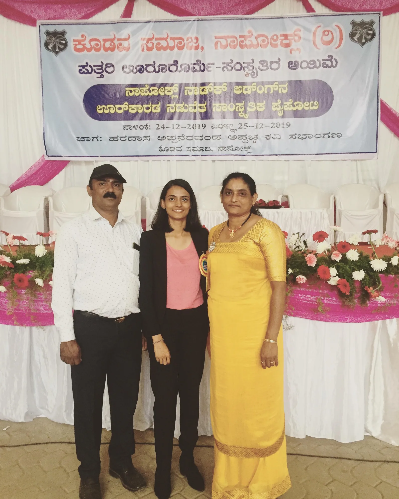

1995
Kodagu
Born 14 May 1995 at Perur, near Napoklu, in the coffee-growing hills of Kodagu. It rains hard there for four months a year and it has never snowed. The nearest snow sits two thousand kilometres north and four thousand metres up.